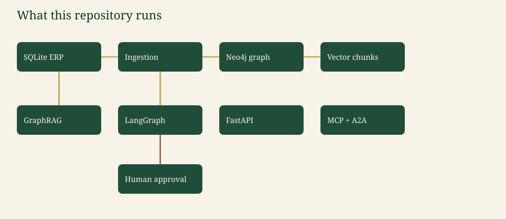
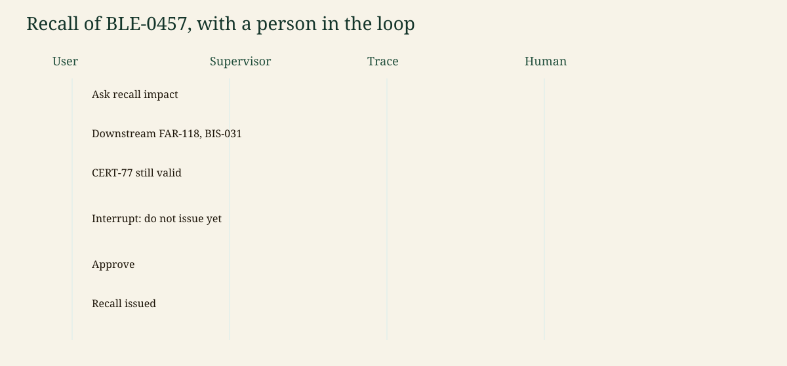

AgriTrace. Fictional data. Canonical write-up: the repository README. Images: docs/assets, referenced relatively from this file.
Canonical copy: README §5.
A quality lead or an auditor asks AgriTrace where a lot went and whether CERT-77 still covers it. The language model is optional. Mock mode is the default.
%%{init: {'theme': 'base', 'themeVariables': {'primaryColor': '#1F4D3A', 'primaryTextColor': '#F7F3E8', 'primaryBorderColor': '#14352A', 'lineColor': '#C4A35A', 'secondaryColor': '#F4E8C1', 'tertiaryColor': '#E7F0EA', 'fontFamily': 'Georgia, serif'}}}%%
flowchart LR
erp["SQLite ERP"] --> ingest["Ingestion"] --> graph["Neo4j or memory graph"]
ingest --> vec["Chunk vectors"]
graph --> rag["GraphRAG"]
vec --> rag --> agents["LangGraph"]
agents --> api["FastAPI"]
agents --> mcp["MCP"]
agents --> a2a["A2A minimal"]
agents --> human["Human approval"]
classDef box fill:#1F4D3A,stroke:#14352A,color:#F7F3E8;
class erp,ingest,graph,vec,rag,agents,api,mcp,a2a,human box;
SQL is the ledger. Ingestion checks referential integrity, writes SQLite, reads it back, and projects nodes. GRAPH_BACKEND=memory answers in-process (CI). GRAPH_BACKEND=neo4j also MERGEs into Neo4j 5.26 with uniqueness constraints and a vector index.
| Component | File |
|---|---|
| Dataset and anomalies | src/agritrace/data/generator.py |
| SQL | src/agritrace/data/erp.py |
| Lineage and certificates | src/agritrace/graph/lineage.py |
| Cypher guard, RBAC, audit log | src/agritrace/security/ |
| Supervisor graph | src/agritrace/agents/graph.py |
| HTTP and A2A | src/agritrace/api/main.py |
| MCP | src/agritrace/mcp/server.py |
%%{init: {'theme': 'base', 'themeVariables': {'fontFamily': 'Georgia, serif'}}}%%
sequenceDiagram
actor User
participant Supervisor
participant Human
User->>Supervisor: Recall impact of BLE-0457
Supervisor-->>User: FAR-118, BIS-031, CERT-77 still valid, needs approval
User->>Human: approve
Human-->>User: Recall issued for BLE-0457
compose.yaml starts Neo4j and the API. Ports publish on 127.0.0.1. The container listens on 0.0.0.0:$PORT. CI does not use Compose.
Observability, the eval set, the LLM gateway, and security controls are sections 10–14 of the README. The richer company platform is target-architecture.md.